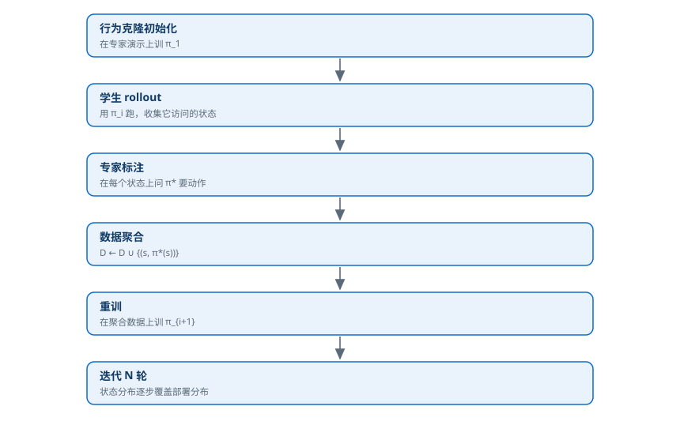

行为克隆初始化 → 学生 rollout 收集状态 → 专家标注 → 聚合重训 → 迭代 N 轮
DAgger（Dataset Aggregation）解决模仿学习的分布漂移：训练在专家轨迹上，部署却进入学生自己的状态分布。做法是**用学生跑、在它访问到的状态上问专家**，把数据聚合回训练集再重训。
| 项 | 值 |
|---|---|
| 输入 | 专家策略 π*、初始演示 D、迭代轮数 N |
| 输出 | 在学生状态分布上也正确的策略 |
| 关键 | 状态分布来自学生，标签来自专家 |
| 变体 | β 混合（以概率 β 执行专家动作）稳定探索 |
| 层级 | 内容 |
|---|---|
| L1 计算理论 | 解决模仿学习的分布漂移：让训练分布覆盖学生实际访问的状态；约束：专家必须可在线查询。 |
| L2 表征与算法 | 表征：聚合数据集 D_i = {(s, π*(s)) : s∼d_{π_i}}；算法：学生状态 + 专家标签 + 重训。 |
| L3 实现 | 行为克隆；β 混合稳定探索；N 轮迭代。 |

物理：把「机器人实际会走到哪里」与「那里该怎么做」对齐，而不是只对齐「专家会走到哪里」。
物理：第 i 轮数据：学生策略访问到的状态 + 专家标签。
物理：聚合（Dataset Aggregation 的名字来源）。
物理：在聚合后的状态分布上最大化专家动作似然。
标准 DAgger（Ross et al., 2011）；工程实现中的 β 混合与在线查询接口由具体系统决定。
def dagger(expert, D, N):
# 物理：学生跑、专家标、聚合重训
pi = train_bc(D) # ① 初始行为克隆
for i in range(N):
states = rollout_states(pi) # ② 学生自己的状态分布
labels = [expert.act(s) for s in states] # ③ 专家标签
D = D + list(zip(states, labels)) # ④ 聚合
pi = train_bc(D) # ⑤ 重训
return pi返回 方法精读 Wiki 索引 ｜ 博客：VLA/WAM 的 RL 后训练实现版